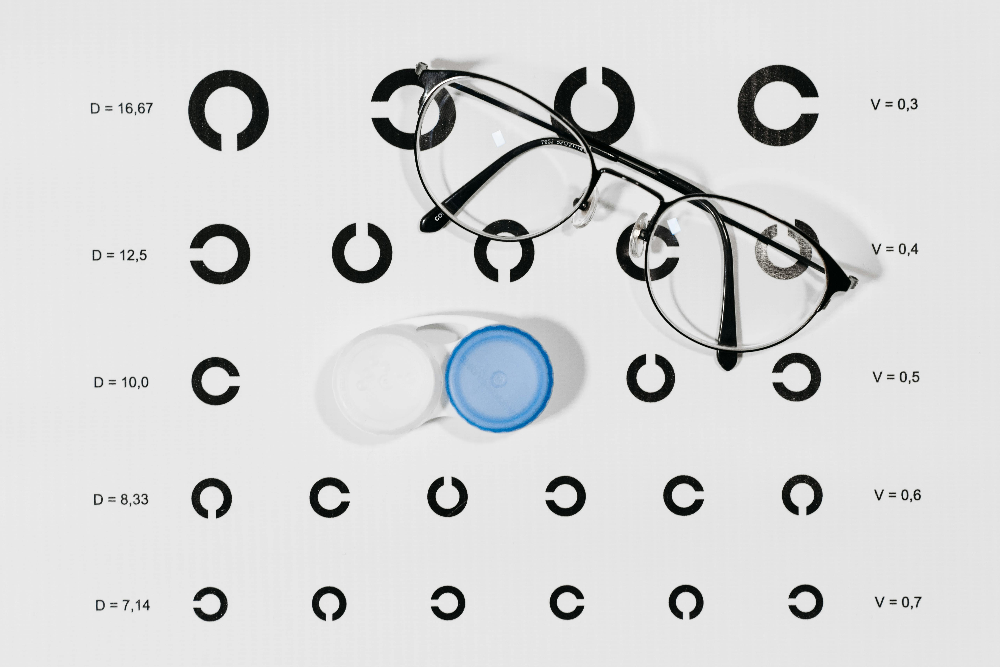

Dicționar de oftalmologie
Totul despre ochii: structură, afecțiuni, tatamente…
Ambliopia
Cunoscută și sub denumirea populară de ”ochi leneș”, reprezintă scăderea acuității vizuale, de obicei unilaterală. Cel mai frecvent întâlnit tip de ambliopie este ambliopia ex anizometropia care apare la copii în primii ani de viață din cauza unor vicii de refracție (astigmatism sau hipermetropie cel mai frecvent) unilaterale sau asimetrice. Se însoțește frecvent (dar nu întotdeauna) cu diferite tipuri de strabisme.
Practic, dintr-un motiv sau altul, imaginile furnizate cortexului vizual de către cei doi ochi sunt foarte diferite și nu pot fi fuzionate în imaginea tridimensională pe care o percepem în mod normal. Pentru a evita senzațiile neplăcute de diplopie, confuzie sau anizeiconie, analizatorul vizual suprimă imaginea cea mai slabă, păstrând-o doar pe cea furnizată de ochiul mai bun. Dacă acest fenomen nu este corectat în perioada de maturizare a vederii binoculare (3-6 ani), el devine definitiv. Înțelegem, astfel, importanța capitală a unui control oftalmologic al tuturor copiilor la vârsta preșcolară. (Vezi și în Strabism; complicații și efecte sociale)
Astenopia acomodativă
Astenopia este, de fapt, cunoscutul fenomen de oboseală oculară. Ea apare de cele mai multe ori pe fondul unui viciu de refracție (de obicei hipermetropie mică) necorectat corespunzător care se decompensează în condițiile suprasolicitării vizuale. Cazul tipic este cel al unui hipermetrop tânăr care petrece mult timp în fața ecranelor sau lucrează la birou, în condiții de iluminare artificială.
Efortul vizual depus de o astfel de persoană este semnificativ, dar nu se petrece în mod conștient, prin urmare simptomatologia se instalează insidios putând subântinde o gamă largă de senzații neplăcute, precum: discomfort vizual, senzație de uscăciune oculară, încețoșare tranzitorie a vederii, hiperemie conjunctivală, oboseală, vedere dublă și chiar cefalee (dureri de cap). Vezi și Ce este astenopia; simptome, complicații și prevenție
Astigmatism
Este unul dintre viciile de refracție care se corectează, de obicei, prin purtarea de ochelari. Caracteristic ochiului astigmat este că are putere dioptrică diferită pe diferite meridiane (de exemplu, meridianul vertical este mai refringent decât cel orizontal) și necesită corecție cu lentile torice (cilindrice). Astigmatismele pot fi miopice sau hipermetropice, simple sau compuse, conforme sau nonconforme, cu axe oblice sau drepte.
Astigmatismul poate fi corectat și cu lentile de contact (în anumite limite) și chiar chirurgical.
O mențiune aparte o merită astigmatismele din cadrul keratoconusului. Această boală specifică persoanelor tinere reprezintă o deformare progresivă a corneei care produce astigmatisme evolutive care, netratate, nu mai pot fi corectate prin mijloace conservatoare și necesită intervenții chirurgicale ample pentru restaurarea parțială a vederii. Keratoconusul poate fi depistat la timp printr-o simplă topografie corneană și oprit din evoluție prin mijloace neinvazive (crosslinking cornean). Vezi Lentile de contact
Blefaroplastie
Reprezintă procedura chirurgicală prin care se elimină excesul de țesut de la nivelul pleoapelor, practicată de cele mai multe ori în scop estetic. Odată cu vârsta, țesuturile palpebrale își pierd elasticitatea, tonusul mușchilor mimicii scade și grăsimea orbitară proemină prin intermediul septului orbitar apărând astfel modificări ale pleoapelor cu aspect dezagreabil. Aceste efecte pot fi remediate prin diferite tipuri de intervenții chirurgicale, una dintre ele fiind blefaroplastia.
Operația se practică sub anestezie locală și constă în excizia unui lambou de țesut musculocutanat de la nivelul pleoapelor urmată de îndepărtarea excesului de grăsime orbitară responsabil de aspectul tumefiat, inestetic, din jurul ochilor. Blefaroplastia este o procedură sigură care se poate practica atât la nivelul pleoapelor superioare cât și a celor inferioare iar rezultatele sunt excelente, pacienții dobândind un aspect întinerit cu păstrarea intactă a mimicii și expresivității feței.
Cataracta
Reprezintă opacifierea cristalinului, lentila intraoculară responsabilă cu focalizarea luminii pe retină. În funcție de structurile cristaliniene afectate, poate fi corticală, nucleară sau subcapsular posterioară. După cronologie, poate fi congenitală sau senilă, iar în ceea ce privește cauza, ea poate fi de involuție, complicată, traumatică sau patologică.
În primele etape de evoluție, unele cataracte se manifestă prin modificarea indicelui de refracție a nucleului cristalinian, ceea ce duce inițial la o miopizare a ochiului. Aceasta ameliorează temporar vederea de aproape, dar efectul este tranzitor, apărând curând simptomatologia clasică: încețoșarea progresivă a vederii însoțită uneori de fotofobie și lăcrimare.
Tratamentul cataractei este exclusiv chirurgical și reprezintă una dintre cele mai practicate tipuri de chirurgie din lume. De asemenea, este și una dintre cele mai sigure, standardizate și rapide operații, rata ei de succes depășind 99%. (Cataracta – diagnosticare și intervenție chirurgicală)
Celulita orbitară
Reprezintă infecția țesutului orbitar din sptele și din jurul ochiului. Este o afecțiune gravă care se însoțește de congestie orbitară masivă, exoftalmie, febră și se manifestă prin scădere de vedere și durere importantă.
Poate avea cauze exogene (inocul traumatic) sau endogene, de cele mai multe ori de la un focar de infecție de vecinătate (sinusuri). Potențialul de gravitate rezidă din proximitatea orbitei cu sinusul cavernos prin care infecția orbitară se poate propaga intracranian și din afectarea, uneori ireversibilă, a nervului optic, amenințând funcția vizuală sau chiar viața pacientului.
Tratamentul constă în terapia antimicrobiană specifică (antibiotic sau antifungic) agresivă.
Conjunctivita
Reprezintă inflamația conjunctivei, adică a țesutului conjunctiv care acoperă suprafața ochiului cu excepția corneei. Conjunctiva, împreună cu corneea, reprezintă interfața dintre ochi și mediul înconjurător, fiind cea mai expusă structură a ochiului la agresiunea factorilor de mediu. Reprezintă, de asemenea, și prima linie de apărare împotriva diverșilor agenți vulneranți. Aceștia pot fi microbi (bacterii, virusuri, fungi) care produc conjunctivitele infecțioase, cu durere importantă și secreții abundente, înalt contagioase, sau pot fi alergeni care determină, în cazul persoanelor cu teren atopic conjunctivitele alergice, manifestate prin congestie oculară, prurit, lăcrimare și fotofobie.
În cazul afectării și a altor structuri oculopalpebrale, putem avea forme complicate, blefaroconjunctivite în afectarea pleoapelor sau chiar keratoconjunctivite cu interesarea corneei.
Se vindecă, de obicei fără urme, sub tratament topic corespunzător, antimicrobian sau antialergic.
Corneea
Este un organ transparent, avascular, situat în centrul părții anterioare a ochiului. Fiind complet transparentă, este invizibilă în mod normal, permițând vizualizarea irisului, adică a părții colorate a ochiului. Corneea are numeroase roluri, poate cel mai important fiind cel optic, de lentilă concav-convexă, parte importantă a refracției oculare. Aproximativ două treimi din puterea refractivă a ochiului provine de la cornee prin cele două fețe ale sale.
Măsurarea parametrilor corneei (razele de curbură, axele meridianelor principale, forma, caracterul regulat sau neregulat) face obiectul topografiei corneene și este parte importantă a complexului de măsurători preoperatorii care permit calculul puterii implantului de cristalin în vederea operației de cataractă.
Topografia corneană permite și depistarea precoce a formelor incipiente de keratoconus care, tratate la timp prin crosslinking pot stopa evoluția invalidantă a acestei boli.
Cristalinul
Este un organ care are forma unei lentile biconvexe cu diametrul de 9mm și grosimea de 4mm. El focalizează lumina care intră în ochi astfel încât să formeze o imagine clară pe retină. Dacă imaginea nu se formează exact pe retină, avem de-a face cu un viciu de refracție – miopie (ochi prea lung), hipermetropie (ochi prea scurt) sau astigmatism. De asemenea, cristalinul participă la acomodație (vederea de aproape) prin modificarea formei și a poziției sale în ochi
Odată cu înaintarea în vârstă, din cauza rigidizării cristalinului, acest proces (acomodarea) se desfășoară din ce în ce mai dificil, apărând necesitatea folosirii de ochelari pentru vederea de aproape.Cristalinul este menținut în poziție de către un sistem complex de susținere, numit zonula lui Zinn. În cazul afectării traumatice, congenitale, patologice sau senile a aparatului zonular se pot produce subluxațiile sau chiar luxațiile de cristalin.
Cea mai frecventă afecțiune a cristalinului este, însă, cataracta, adică diminuarea transparenței acestuia prin denaturarea proteinelor sale și opacifierea consecutivă. Cataracta este o boală cu evoluție lent progresivă dar inexorabilă. Soluția este chirurgicală, constând în înlocuirea cristalinului cu o lentilă artificială, implantul de cristalin. Chirurgia cataractei este una dintre cele mai sigure și mai frecvent practicate operații pe plan mondial. Progresele tehnologice au fost uriașe în ultimele decade, atât în ceea ce privește tehnologia de extracție a cristalinului (facoemulsificare), impactul minim asupra ochiului, cât și privitor la tipurile, materialele și design-ul optic al cristalinelor artificiale, permițându-ne practicarea chirurgiei cataractei cu rezultate excelente.
După cum am văzut, cristalinul joacă un rol cheie și în procesul de refracție; înlocuirea sa se poate adresa și viciilor de refracție, permițând obținerea independenței de ochelari atât în vederea la distanță, cât și de aproape. Vezi și Primele implanturi de cristalin
Entropion
Reprezintă o tulburare de statică palpebrală care afectează de obicei pleoapa inferioară, manifestată prin inversarea poziției pleoapei astfel încât marginea ei liberă vine în contact direct cu suprafața oculară (corneea). Din cauza contactului direct cu cilii (genele) prezenți pe marginea liberă și în contextul inervației senzitive deosebit de bogate a corneei care îi conferă o sensibilitate ridicată, simptomatologia este foarte zgomotoasă, manifestându-se prin senzația permanentă sau intermitentă de corp străin.
Entropionul poate fi de cauză involutivă (laxitate palpebrală și spasm al mușchiului orbicular) sau cicatricial survenit în urma unor traumatisme sau inflamații conjunctivale. Se poate complica cu eroziuni sau chiar ulcerații corneene care pot să pericliteze funcția vizuală.
Tratamentul, pe lângă cel paliativ (lubrifiante și reepitelizante corneene), este chirurgical, constând în repoziționarea pleoapei prin diferite tehnici chirurgicale adaptate fiecărui caz în parte (suturi eversante, excizia unei langhete de orbicular, reinserția retractorilor pleoapei) cu rezultate funcționale, anatomice și estetice excelente.
Glaucom
Glaucomul este o neuropatie optică cronică progresivă asociată frecvent cu creșterea presiunii intraoculare și care duce la apariția unor deficite carcteristice de câmp vizual. Sub această umbrelă nosologică se adăpostesc, de fapt, mai multe afecțiuni, de la glaucoamele congenitale, cele secundare altor boli oculare, generale sau chiar consumului exagerat de medicamente, la glaucomul traumatic și binecunoscutele glaucoame primare cu unghi deschis sau îngust. Toate acestea au în comun un anumit tip de deteriorare a nervului optic, dar au mecanisme de producere distincte și, implicit, tratamente diferite – de la administrarea de picături și până la tratamente laser sau chirurgicale.
Alterările produse la nivelul nervului optic sunt ireversibile, ceea ce, dacă înțelegem că glaucomul este asimptomatic până în stadiile tardive de evoluție, reflectă importanța căutării active a semnelor bolii de către medicul oftalmolog chiar în absența oricăror simptome, tuturor pacienților din grupa de vârstă de peste 40 ani. Screening, diagnostic și tratamente pentru glaucom
Hemoragia subconjunctivală
Apariția unei pete de culoare roșu aprins localizată sau extinsă pe suprafața albă a ochiului semnifică producerea unei hemoragii în spațiul subconjunctival. Este rezultatul ruperii unor vase de sânge mici (capilare), echivalentul unei echimoze (vânătăi) și, ca eveniment izolat, nu are o gravitate deosebită în ciuda aspectului uneori dramatic al evenimentului. Poate surveni în context traumatic sau după un efort fizic care implică creșterea presiunii în extremitatea cefalică (manevra Valsalva) – ridicare, vomitat, tuse sau strănut violent, sau chiar fără vreo cauză aparentă. Tratamentele antiagregante sau anticoagulante pot să predispună la sau să agraveze o hemoragie subconjunctivală. În unele cazuri, totuși, hemoragia subconjunctivală poate fi semnul unei tulburări de coagulare, al unei fragilități capilare sau a unei hipertensiuni arteriale care poate justifica investigații suplimentare. Evoluția ei este autolimitată, dispărând treptat în 7-10 zile fără un tratament specific.
Keratoconus
Afecțiune degenerativă a corneei caracterizată printr-o ectazie conică însoțită de o subțiere progresivă a corneei. Se manifestă prin apariția unui astigmatism miopic progresiv care, în stadiile avansate nu mai poate fi corectat cu ochelari și nici chiar cu lentile de contact, singurele soluții fiind cele chirurgicale, implantarea de inele intracorneene sau chiar transplantul de cornee. Alergiile și antecedentele familiale de keratoconus sunt factori de risc iar frecatul la ochi este un factor agravant al evoluției bolii. Boala este bilaterală, asimetrică, progresivă și potențial invalidantă.
Depistată la timp, această deformare progresivă a corneei poate fi tratată și evoluția nefavorabilă a keratoconusului poate fi oprită. Crosslinkingul cornean (CXL) este o metodă neinvazivă de a reface și întări legăturile dintre fibrele de colagen din stroma corneană. Această manevră este complet neinvazivă, constând din expunerea corneei tratate cu riboflavină la lumina ultravioletă, generând reacțiile chimice care duc la întărirea și stabilizarea corneei și, implicit, la oprirea creșterii necontrolate a astigmatismului.
Toate acestea necesită un efort diagnostic pentru depistarea precoce a keratoconusului, efectuarea topografiei și a pahimetriei corneene pacienților suspecți (tineri cu astigmatisme miopice evolutive, rude ale pacienților cu keratoconus) fiind necesare pentru depistarea precoce a bolii și șansa unui tratament eficient.
Miopia
Viciu de refracție caracterizat printr-o disproporție între lungimea axială a globului și puterea refractivă a dioptrului ocular consecința fiind defocalizarea imaginii care se va forma înaintea retinei și nu în planul acesteia, așa cum se întâmplă în mod normal. Poate fi corectată prin portul corecției optice (aeriene sau de contact) sau chirurgical.
Miopia este considerată mică atunci când nu depășește 3 dioptrii, medie între 4-7 dioptrii și mare la peste 7 dioptrii. Tendința naturală a miopiei este de a crește, mai cu seamă la pubertate până în jurul vârstei de 18-20 ani. Utilizarea excesivă a ecranelor și munca de aproape sunt factori agravanți care pot accelera sau prelungi evoluția unei miopii. Atunci când creșterea axială a globului se produce în mod accelerat iar dioptriile depășesc valori de 9-10 dioptrii, vorbim despre miopie patologică sau miopie forte.
Miopia nu mai este un simplu viciu de refracție ci o boală potențial invalidantă prin complicațiile pe care le poate aduce cu sine. Cele mai redutabile dintre acestea sunt cele retiniene, de la deteriorarea retinei centrale (coroidoza miopică, stafilom posterior, pata Fuchs, gaura maculară) și până la degenerescențe periferice și dezlipiri de retină.
Acest dicționar este susținut de medic oftalmolog Andrei Mureșan